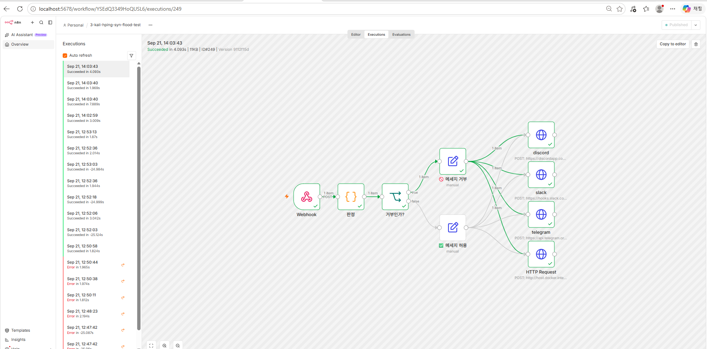

원인 좁히기
오류 메시지와 응답 코드를 읽고, 한 번에 하나씩만 바꾸며 어디서 막히는지 나눕니다.
ISOLATE
IT INFRASTRUCTURE ENGINEER PORTFOLIO
김상혁 · IT 인프라 엔지니어(서버·스토리지·네트워크) 지원
서버·스토리지·유무선 네트워크 구축과 고객사 기술지원 신입 엔지니어로 지원합니다. 군에서 장비를 지급·점검하며 오류의 원인을 따졌고, 교육과정(420시간)에서 Linux 명령어, 계정·권한 설정, 서비스 관리와 pfSense·Wazuh·Graylog 구성을 직접 해 봤습니다. 직접 운전해 부산·울산·경남·경북 고객사를 방문할 수 있고, 선임에게 배우며 맡는 범위를 넓히겠습니다.
// 현재 방향
goal = "IT Infra Engineer"
method = "observe · isolate · record"
tools = [Linux, pfSense, Wazuh, Graylog, Docker]
learning _
01 / PROFILE
오류 메시지와 응답 코드를 읽고, 한 번에 하나씩만 바꾸며 어디서 막히는지 나눕니다.
고쳤다고 끝내지 않고 실제 응답과 화면으로 다시 확인합니다. 확인하지 못한 항목은 통과로 적지 않습니다.
분대장 때 인원 현황을 보고하던 순서로, 지금 상태와 한 조치, 남은 위험을 짧게 정리합니다.
02 / SKILLS
SKT ALEPH 네트워크 보안 과정(코리아AI아카데미, 2026.08~11, 420시간)에서 Linux 명령어, 계정·권한 설정, 서비스 시작·중지, 패키지 설치, pfSense 방화벽 연결, Wazuh·Graylog 로그 서버 설치·점검을 직접 해 봤고, 11월에는 Ubuntu 가상 환경에서 같은 기본 작업을 다시 실행해 기록했습니다. 서버 OS·스토리지는 입사 후 선임에게 배우며 빠르게 익히겠습니다.
03 / PROJECTS
프로젝트를 눌러 상황·행동·결과를 확인해 보세요. 실습에는 가상 환경과 가상 자료만 사용했습니다.
공격이 일어났을 때 로그 수집, 탐지, 경보, 대응이 한 흐름으로 이어지는지 직접 구성해 확인해야 했습니다.
Linux 공격 단말에서 Gobuster, Hydra, hping3로 공격을 일으키고 Wazuh 규칙과 Graylog 이벤트 정의로 탐지했습니다. n8n으로 판정, 경보, 대응을 이었습니다.
디렉터리 스캔 404 4,121건과 로그인 실패 1,741건을 임계값 규칙(동일 IP 30초 10회, 120초 6회)으로 묶어 경보 472건·354건이 발생했고, 공격 IP 차단과 인시던트 티켓(#63)으로 확인했습니다.



가상 지자체 민원포털을 대상으로 공격 탐지, 자동 대응, 정상 사용자 확인, 원복까지 검증하는 팀 프로젝트입니다. SOAR는 공격을 탐지하면 사람이 하던 차단·잠금·기록을 자동으로 처리하는 관제 체계를 말합니다.
관제를 맡아 Wazuh 설치·점검과 티켓 저장소·보안 대시보드를 구성했고 S1(로그인 무차별 대입)·S4(로그인 실패 뒤 성공)·S8(스캔 뒤 로그인 시도) 시나리오 구현을 진행했습니다. 티켓 재차단 로직의 경계 케이스 버그를 고치고, n8n이 Wazuh API를 호출하는 계정을 최소 권한으로 설계했으며, 결과를 README에 기록했습니다. 막힌 오류가 이어질 때는 프로젝트 PPT로 6가지 공격 시나리오를 브리핑해 팀원들이 절차 흐름을 이해한 채 진행하게 했습니다.
발표(11.06) 기준 공격 8건을 모두 탐지했고 7건에서 자동 대응 효과를 확인했습니다(87.5%, 공격 조건이 채워진 뒤 탐지까지 걸린 시간 중앙값 53.4초). 이후 개인 작업으로 6개 시나리오를 탐지부터 자동 대응까지 실측했습니다.
서버 운영의 기본인 계정·권한, 패키지, 서비스 관리를 입사 전에 직접 실행해 확인하고 싶었습니다.
그룹과 사용자를 만들고 디렉터리 권한(2770)을 설정했습니다. nginx를 apt로 설치하고 systemctl로 중지·시작하며 journalctl로 기록을 확인한 뒤, 실습 전 상태로 되돌렸습니다.
그룹 밖 사용자는 파일 접근이 거부되고 그룹 사용자는 쓰기에 성공했습니다. 서비스는 실행 중 HTTP 200, 중지 중 연결 실패, 재시작 뒤 HTTP 200으로 확인했습니다. Windows Server와 스토리지는 아직 해 보지 않았고 다음 계획으로 적었습니다.
04 / CAREER
병사로 복무하고 만기 전역했습니다.
분대장과 부소대장으로 20~30명을 지휘·통솔하고 인원 현황을 관리·보고했습니다. 병기탄약 임무를 혼자 맡아 병기·탄약을 관리했고, 병사를 대상으로 화생방 교육과 평가도 맡았습니다.
교전훈련장비를 지급하고 작동 상태를 점검했습니다. 훈련 중 오류가 나면 원인을 따져 훈련이 끊기지 않게 했습니다.
코리아AI아카데미, 420시간. Linux 터미널 실습, 탐지·대응 서버 구성, 접근 제어, 웹 서비스 배포 과제를 수행했습니다.
05 / CERTIFICATES
필기에 합격했고(2026.11.01 응시), 실기는 2026년 12월 6일에 응시합니다.
2027년 취득을 계획하고 있습니다. 2027년 시험 일정은 아직 공고되지 않아, 공고 후 응시 회차를 정합니다.
1종 보통 운전면허(2019.10 취득)로 2020년 9월부터 직접 운전하고 있습니다. 군에서도 2.5톤 트럭과 소형전술차량을 운전했고, 부산·울산·경남·경북 고객사 방문에 바로 대응할 수 있습니다.
06 / LINKS
공개 저장소에서 제가 어떻게 구성하고 확인했는지 볼 수 있습니다.